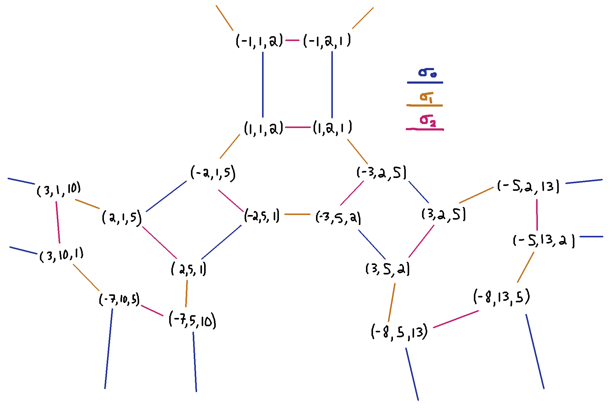
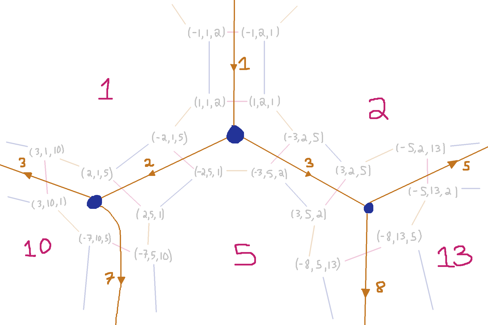
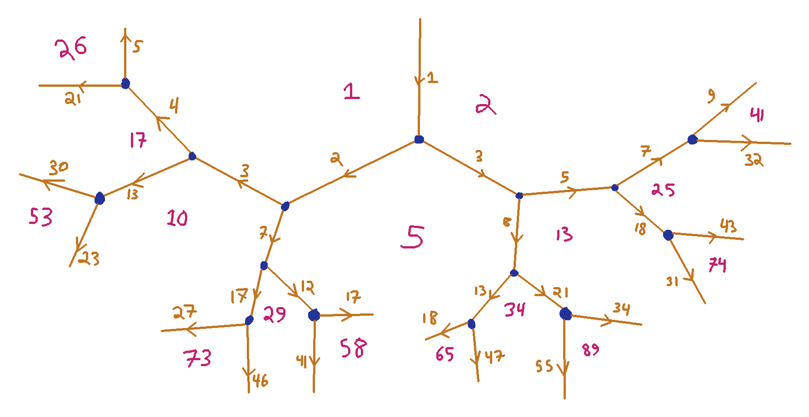
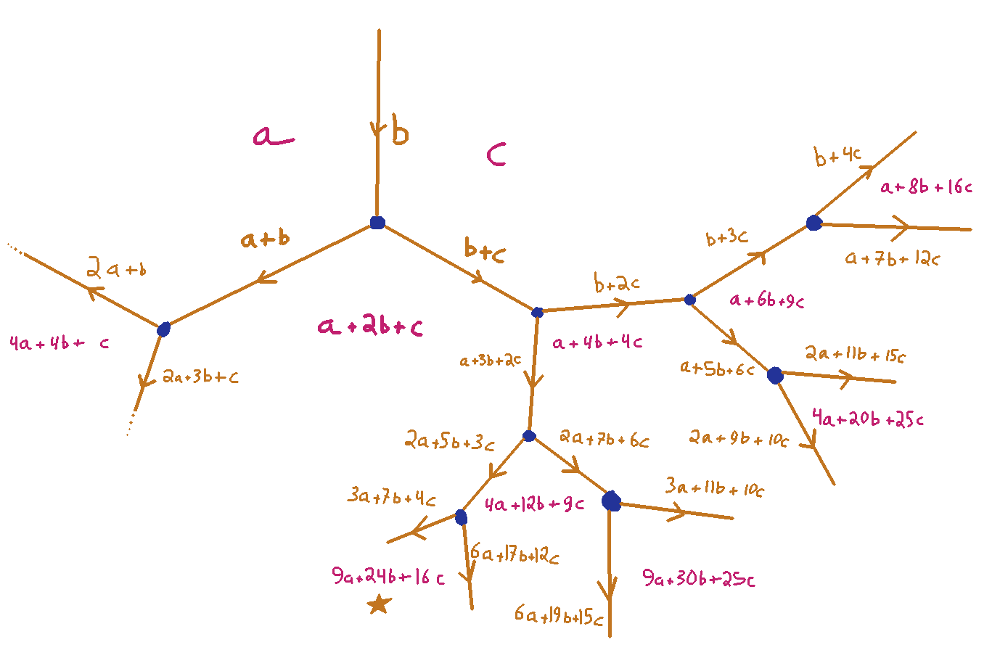
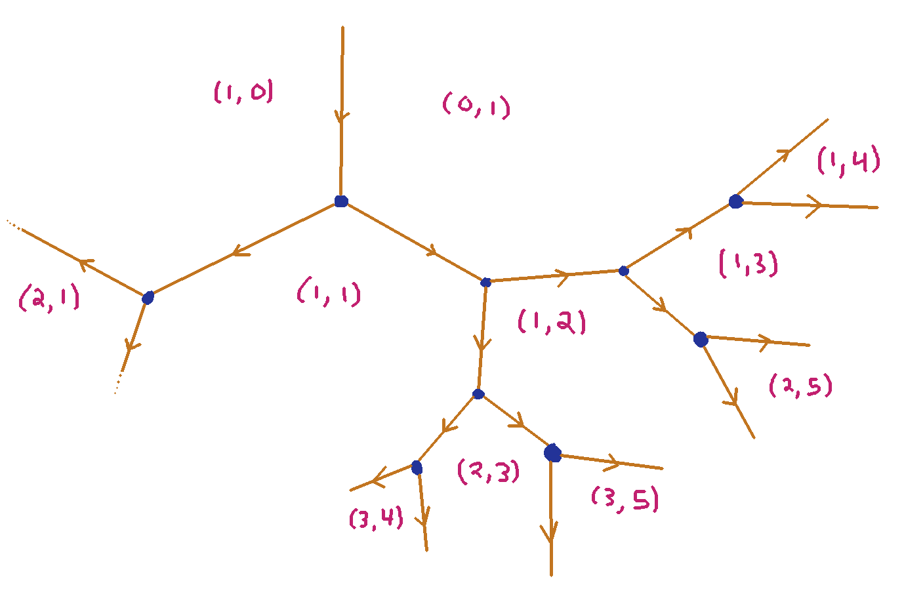
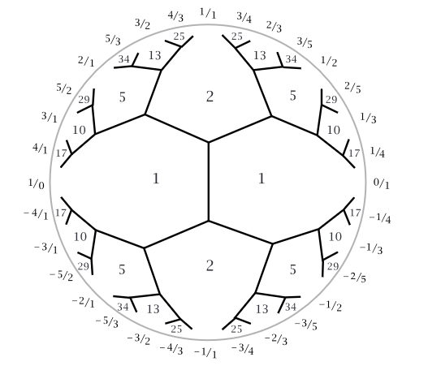

How to Invent Topographs
The point of this note is that, as is commonly the case, I was
thinking on my own about some math thing and stumbled into
re-inventing something already invented a long time ago. Once upon
a time I think I might have felt some disappointment that my
thinking wasn't novel, but lately it feels like a kind of
satisfying vindication that at least I was thinking "in the right
direction" or something.
In any case, I felt like jotting down a cleaned up version of
how my thought process got me there. I tend to like other
people's reconstruction of stories of the form "You could have
invented X", so here's my offering.
Square Roots modulo $n$
Suppose we're trying to understand the structure of the square roots of $-1 \pmod k$.
It's classically known that square roots of $-1$ exist mod $k$ if and only if
$k$'s prime factorization is all primes of the form $4n+1$ and maybe one factor of $2$,
but let's say that isn't satisfying enough — we'd like to know more about where those
square roots actually live in the set of numbers mod $k$.
Idea: Think proof-relevantly
The statement that $b^2 \equiv -1 \pmod k$ hides a bit of data that serves as a witness
to the equality modulo $k$. Whenever that holds, there is an $\ell$ such that $b^2 = -1 + k\ell$.
So let's keep that $\ell$ in mind going forward.
Idea: Consider how new solutions can be found from others
There are a couple of trivial ways in which solutions can be related to each other.
If we say that a triple $(b,k,\ell)$ is 'good' when $b^2 = -1 + k\ell$, then
also
- we can flip the sign of $b$, i.e. $(-b,k,\ell)$ is also good
- we can swap $\ell$ and $k$, i.e. $(b,\ell,k)$ is also good
Furthermore, because we're thinking mod $k$, we also know that
adding $k$ to any variable should keep the equation satisfied.
That is, if $b^2 \equiv -1 \mod k$, then surely $(b+k)^2 \equiv
-1 \mod k$. How does that affect our witness $\ell$?
We can phrase this as: if $b^2 = -1 + k\ell$, then what's the
$\ell'$ that makes $(b+k)^2 = -1 + k\ell'$ true? A bit of algebra tells us:
\[(b+k)^2 = -1 + k\ell'\]
\[b^2+2bk+k^2 = -1 + k\ell'\]
\[(-1+k\ell)+2bk+k^2 = -1 + k\ell'\]
\[k\ell+2bk+k^2 = k\ell'\]
\[\ell+2b+k = \ell'\]
So we've shown that if $(b,k,\ell)$ is good, then also $(b+k,k,\ell+2b+k)$ is good.
Idea: Make one of the things like the others
So we have a handful of different operations that can generate
more good triples. The sign flip and $\ell$-$k$ swap operations
are self-inverse, i.e. they're involutions, which is nice, but
the $b \mapsto b+k$ operation isn't. Is there a way to modify
this latter operation into an involution while still being able
to reach the same set of good triples? Turns out there is. We
can compose it with the sign flip, and consider the operation:
\[(b,k,\ell) \mapsto (-b-k, k, \ell+2b+k)\]
which is an involution and preserves "goodness" of triples.
Idea: Try visualizing some examples
Let's start calculating some examples and see what the space of solutions looks like.
Let's write
\[\sigma_0 : (b,k,\ell) \mapsto (-b, k, \ell)\]
\[\sigma_1 : (b,k,\ell) \mapsto (-b-k, k, \ell+2b+k)\]
\[\sigma_2 : (b,k,\ell) \mapsto (b, \ell, k)\]
for the three involutions we know preserve solutions
We write out some triples, and join them with a colored line depending on which involution
relates them. This gives us a graph structure. It looks like this:

That's interesting! It looks like $\sigma_1$ and $\sigma_2$ always form hexagons,
and $\sigma_0$ and $\sigma_1$ always form squares.
Idea: Think of coxeter groups and cell complexes
This idea is not as much of a low-hanging-fruit general-purpose
heuristic as the others, but it is something at the forefront of
my mind for some reason, given other mathematical things I've
played with in the past. It turns out these squares and hexagons are not entirely coincidental.
The idea is: Whenever you have a list of involutions
$\sigma_0,\ldots,\sigma_n$ acting on a set $X$ and any
$\sigma_i$ and $\sigma_j$ that aren't adjacent in the list
commute, then it's just screaming to be interpreted as a
space, a cell complex, made up of vertices, edges, faces, etc.
I actually have engaged in a bit of revisionist history and chose the
names of the three involutions based on how I eventually figured out
they interacted: indeed $\sigma_0$ commutes with $\sigma_2$.
The way we geometrically interpret involutions $\sigma_0, \sigma_1, \sigma_2$ acting
on a set is as follows: every element of the set is interpreted as
a flag in the cell complex: a simultaneous choice of a face,
an edge, and a vertex, all incident to one another. The effect of
$\sigma_i$ on a flag $x \in X$ is to output the unique flag $x'$ that
is the same as $x$ is all cells except the dimension-$i$ one.
So $\sigma_0 x$ is the flag that shares the same face and edge as $x$,
but differs in the vertex, $\sigma_1 x$ is the flag that shares the
same vertex and face as $x$, but differs in the edge, and $\sigma_2 x$
is the flag that shares the same vertex and edge as $x$, but differs
in the face.
This means that the vertices of the complex can be thought of as
equivalence classes of flags under hitting them with $\sigma_1$ and
$\sigma_2$ repeatedly: if you change the edge and the face as much as
you can, but leave the vertex alone, you've found a vertex.
For the particular $\sigma_1$ and $\sigma_2$ we've described above, we do find that
$(\sigma_1\sigma)^3 = \mathsf{id}$, which means that every vertex has
three edges coming out of it. There is no such relation for $\sigma_0\sigma_1$,
i.e. $(\sigma_0\sigma_1)^n \ne \mathsf{id}$ for all $n$. This means the faces
of our complex are polygons with infinitely many sides! We have
an order-3 apeirogonal tiling
of hyperbolic space.
What's more, we can notice some patters in the numbers we've attached to the flags.
The value of $k$, the middle element of the triple, stays the same across each face
of the complex (because $\sigma_0$ and $\sigma_1$ don't affect it) so we can label
each face with its value of $k$. And for each edge, we notice that the value of $b$
doesn't change when we apply $\sigma_2$, and it only changes in sign when we apply $\sigma_0$.
This means we can label each edge with a 'directional' value of $b$: we draw a little arrow
pointing towards where the $\pm b$ is positive, and label the edge with the absolute value of $b$.
This looks like the following:

We can in fact describe how to build the diagram incrementally, without dealing specifically
in the flags $(b,k,\ell)$. We notice that around each face labelled $k$, the directed labels
"accelerate" by $k$ each time we go from edge to edge: as we go clockwise around the face $k$,
the edges point $k$ more clockwise. So if we know the label on a face and an edge, we know the labels
of all edges around that face, and if we know two adjacent edges' labels on one face, we can
deduce what the face's label must be. Expanding the diagram a couple more levels deep, we see:

Now we have that:
- For every edge labelled $b$, sitting between two faces labelled $\ell$ and $k$, we have
$b^2 = -1 + \ell k$.
- Landau's conjecture that there are infinitely many primes of the form $n^2 + 1$ is equivalent
to asserting that there are infinitely many $n \ge 1$ that only occur on one edge in this diagram.
Idea: Try generalizing
Okay, that's neat. What else can we do with this? What happens
if we replace the $1$ and $2$ on the two initial faces (and
the $1$ on the edge between them) with arbitrary variables, and follow the same rules
that give us new edge labels and new face labels?
We do a bunch of calculations and obtain:

Two things jump out at us staring at this diagram:
- It has an obvious symmetry, such that if we mirror it horizontally, and swap $a$ and $c$, we get the same thing. So it's unnecessary to redundantly fill out the left half of the diagram.
- The coefficients in the face labels look suspiciously identical to coefficients
of $(px + qy)^2$ for various
integer values of $p$ and $q$. For example, $(3x+4y)^2 = 9x + 24xy + 16y^2$, and we see $9a + 24b + 16c$ in the diagram, marked with a star.
With a little more effort, we can also see some patterns that govern the edge labels.
- If $E$ labels an edge between two faces $F_1,F_2$, then
\[E^2 - F_1 F_2 = b^2 - ac\]
That is, while our original diagram (with the concrete face labels 1,
2, 5, etc.) was describing solutions to $x^2 = -1 \pmod k$, this
generalized diagram is describing solutions to $x^2 = b^2 - ac \mod k$.
- If $E$ labels an edge between two faces $F_1,F_2$, and $F_3$ is
adjacent to both $F_1, F_2$, then
\[ 2|E| = F_1 + F_2 - F_3 \tag{\dag}\]
With the arrow of $E$ pointing away from $F_3$ if the rhs is positive, towards
$F_3$ if it's negative.
Armed this invariant $(\dag)$, we know that the essential
information in the diagram is just the face labels: we can recover the
edge labels from them. And the
essential information for determining the face labels is the pair
$(p,q)$ as discussed above. So now we can redraw the diagram as:

Which looks very simple in structure: each face-label pair is the componentwise sum of its two "parent"
faces' labels.
The recipe for recovering a concrete choice of numbers from this abstract version is:
Pick $a, b, c$. If a face is labelled $(p,q)$ in the "abstract" diagram, then it should be
labelled $p^2 a +2pq b + q^2 c$ in the "concrete" diagram. Edge labels can be recovered
according to the rule $(\dag)$ above.
That means what's really going on is we're evaluating an arbitrary
quadratic form (whose coefficients are $a, 2b, c$) at various values of $p, q$.
Topographs
I googled around for things like "apeirogon" and
"quadratic residue" and the like, and found out that Conway had
already invented this diagrammatic way of thinking in the
late 90s by, if I understand right, coming in the opposite direction and starting from
evaluation quadratic forms. He called them "Topographs" and proved way more fancy stuff than I ever dreamed of about them. Allen Hatcher has a book with lots
more information. Haven't read it yet, looks very cool. Here's his version of the above diagrams, rendered on the Poincaré disk:

Question
Are there higher-dimensional cell complexes for solutions to $x^n \equiv t \pmod k$
for $n > 2$? I.e. can we find involutions $\sigma_0, \ldots, \sigma_m$ that connect solutions of that
equation to one another, such that $\sigma_i\sigma_j = \sigma_j\sigma_i$ when $|i-j| > 1$?
Open problem as far as I know;
would love to know if there is anything in the literature known
about this.
Looks like this is investigated in this paper
by Milea, Shelley and Weissman!